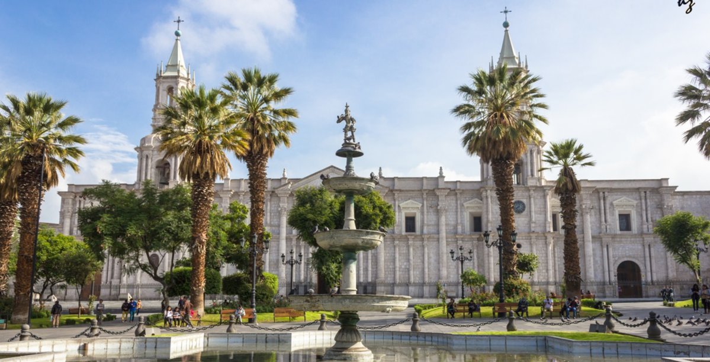
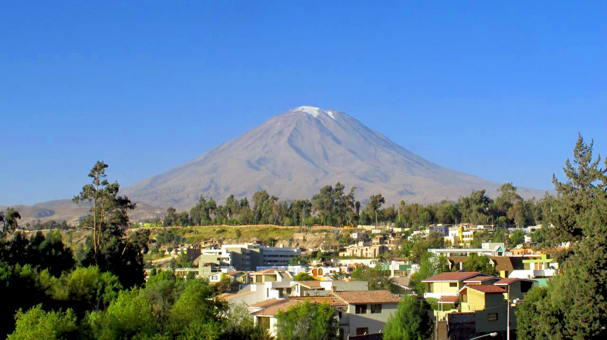
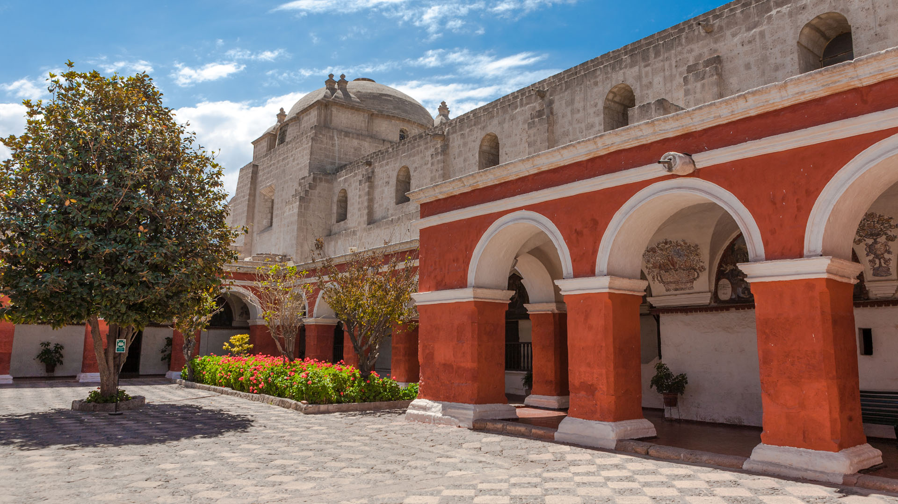

AREQUIPA
Ven y conoce mas sobre nuestra hermosa Ciudad Blanca

Arequipa es una ciudad peruana, capital tanto de la provincia como del departamento homónimo. Es la segunda urbe más habitada del Perú, con una población proyectada de 1 177 200 habitantes para el año 2024. Desde el punto de vista político, se rige como la sede oficial del Tribunal Constitucional y es metafóricamente reconocida como la «Capital Jurídica del Perú».La urbe también responde a los apelativos de la Ciudad Blanca y el León del Sur.
Porque venir a visitar Arequipa?
Arequipa es un departamento en el sur del Perú que ofrece una experiencia única, combinando belleza natural, cultura viva y experiencias únicas. Podrás disfrutar de paisajes increíbles como el Cañón del Colca, tradiciones milenarias y explorar pueblos encantadores. Arequipa es ideal para aquellos que buscan aventura, cultura y belleza natural.
Puedes visitar lugares como:
- La Plaza de armas
- Cañon del Colca
- La Catedral de Arequipa
- Volcan Misti
- Monasterio de Santa Catalina
- Yanahuara
- Mirador de Carmen Alto
  
Y como en muchos lugares de nuestro diverso pais, la gastronomia en este hermoso lugar no se queda atras. Entre estos platos de origen Arequipeño encontraremos:
- Rocoto Relleno
- Un aji relleno de carne picada, arroz y especias, envuelto en una masa de papa.
- Pastel de Papa
- Un pastel salado hecho con pure de papa, queso y especias.
- El "American"
- Plato tradicional combinado de arroz, carne guisada, aji de calabaza, y otros ingredientes
- Adobo Arequipeño
- Un guiso de carne de res o cerdo en una salsa espesa de aji panca, cebolla, ajo y comino, acompañado de arroz
Entre mayo y septiembre, es el mejor momento para viajar a Arequipa. La temperatura, en esta época, es muy agradable, pues ronda los 20 ºC. Asi que, tu que esperas para comprar tu boleto a tu nuevo destino?
COMPRA TUS BOLETOS AHORA!!!
LIMA - AREQUIPA (Bus)
- Flores. Precios de S/70 - S/120
- Civa. Precios de S/90 - S/140
- Oltursa. Precios de S/95 - S/145
- Cruz del Sur. Precios de S/130 - S/165
LIMA - AREQUIPA (avión)
- JetSMART, Aprox. $121
- Sky Airline, Aprox. $123
- LATAM, Aprox. $184